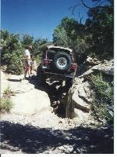
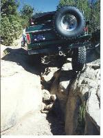

Moab: Pre-Helldorado 9/19/98
September 19, 1998
by Terry Howe

All of us arrived in Moab fairly late Friday night, but we were up
early Saturday morning eager to abuse our trucks. The victims
for the first day in Moab included Ray, Leah, Rose, and Nate Bork,
Dave Vest, Roger Wild, and Terry Howe. We gathered at the City Market
in downtown Moab and Helldorado was the plan, but we didn't
have real good directions to the trail head. A quick trip to Moab
Off-Road and we had detailed directions to the trail plus directions
to a canyon that was said to be a good warm up. Some Poor Fool
from SLC with a built CJ-7 decided to join us to make a total of
five trucks. Soon we were off to the trail head.
It didn't take long for us to find the canyon that is Pre-Helldorado
and it didn't take long for the going to get slow. Roger was the
first victim to need the strap when he got jammed in a squeeze.
It wasn't long before fender flares where ripping off his Jeep left
and right and he had the first scratch in his new paint job.
 The first major obstacle was a stair step on a hard left turn. Soft
dirt on top of the step made it hard to get traction, but we all
made it up after some work. After we made it through that one we
walked the next 3 obstacle. When the Poor Fool had seen the next
obstacles, he decided he'd had enough, he had no rocker protection
and it was obvious that damage was a sure thing for him. The
Poor Fool wisely decided to turn around at this point.
The first major obstacle was a stair step on a hard left turn. Soft
dirt on top of the step made it hard to get traction, but we all
made it up after some work. After we made it through that one we
walked the next 3 obstacle. When the Poor Fool had seen the next
obstacles, he decided he'd had enough, he had no rocker protection
and it was obvious that damage was a sure thing for him. The
Poor Fool wisely decided to turn around at this point.
The next two obstacles were squeezes and Ray lost a bead on the
first one. He couldn't drive out, so he winched himself to level
ground to change the tire. I broke a leaf on one of my rear
springs somewhere in here and Roger had all his fender flares
off by the time he was through. A tremendous rock stacking effort
was required on one squeeze to get the Broncos through without
body damage.
The next stair step looked real hard, but didn't give anyone too
much trouble. After the stair step came a crack that had to be
straddled. Getting on the obstacle was easy, it was getting off
it that was hard. Just about everyone received some minor body
damage here.
Near the end of the trail, I managed to high center on a
boulder and I had to winch myself off. It seems someone
else needed a strap here, but fortunately for them, I cannot
remember who it was.
The trail ended in a cool off-camber part over a large hole.
This trail was hardly the Moab type wheeling you would expect,
it was a lot more like Las Cruces. We got out of the Warm-up
trail around 2:30 and drove over to the trail head for Helldorado.
Helldorado looked much harder and we'd already done enough damage
for the day. We headed for camp to make repairs for the next
day of wheeling.

 The first major obstacle was a stair step on a hard left turn. Soft
dirt on top of the step made it hard to get traction, but we all
made it up after some work. After we made it through that one we
walked the next 3 obstacle. When the Poor Fool had seen the next
obstacles, he decided he'd had enough, he had no rocker protection
and it was obvious that damage was a sure thing for him. The
Poor Fool wisely decided to turn around at this point.
The first major obstacle was a stair step on a hard left turn. Soft
dirt on top of the step made it hard to get traction, but we all
made it up after some work. After we made it through that one we
walked the next 3 obstacle. When the Poor Fool had seen the next
obstacles, he decided he'd had enough, he had no rocker protection
and it was obvious that damage was a sure thing for him. The
Poor Fool wisely decided to turn around at this point.